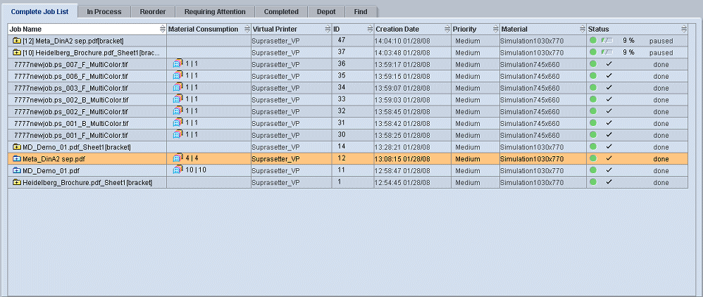
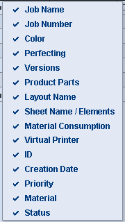

The contents of the dynamic window changes depending on the work context which is currently active. The basic view of the dynamic window is a list display.

In general, you can switch over to a detail view by opening an entry in the list. This provides you with more detailed information or you can make detailed parameter settings here.
You can change the height of the dynamic window by positioning the mouse pointer on the separating line between the status panel and the dynamic window and then moving this line up or down.
The status panel becomes smaller as you make the dynamic window bigger.
You can display a context-sensitive menu with the right mouse button when you are in the list view mode in the dynamic window. The context-sensitive menu allows you to trigger actions for the selected item in the dynamic window.
Items are often shown as lists in the dynamic window, for example, job lists or resources such as color tables. You can change the order of the columns in these lists by clicking a column heading and then, with the left mouse button held down, moving the column to its new position.
You can display a context-sensitive menu with a list of the column headers by positioning the mouse pointer on a column header and right-clicking it. Select a heading to hide the column in question or select it again to show it. A column that is shown is marked by a tick before the menu item.

Copyright © 2013 Heidelberger Druckmaschinen AG